Overview
Prokudin-Gorskii took three photos of every scene, one through a red filter, one through green and one through blue, and recorded all three onto a single glass plate stacked vertically. So a digitized plate is one tall grayscale image holding three pictures of the same thing, taken a moment apart, with the camera never quite back in the same place between shots. To get the color photo back we cut the plate into thirds, work out how far each channel drifted, and stack them as RGB.
Everything below is roughly in the order I actually did it, since most of the choices here were reactions to something breaking.
Hand-cropped plates
Three of the small plates show up twice in my results, once as the original scan and once hand-cropped. To be clear about what's being compared: the hand-cropping was done to the input plates, and both versions below are outputs of the final pipeline. The crops were done manually because at the time I wasn't doing any cropping in code. The serial NCC ran over the whole plate including the scan borders, and those borders are nearly identical in all three channels and run the full height and width, so they match strongly at zero displacement and drag the estimate toward no movement at all. Cropping them off by hand was the fastest way to get something usable while the matching code was still simple.
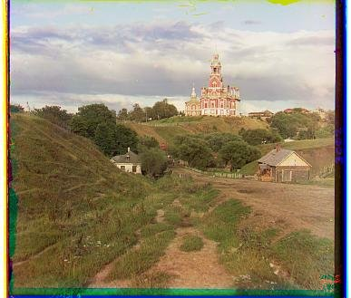
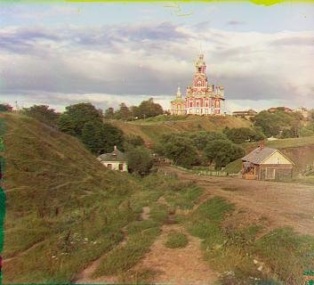
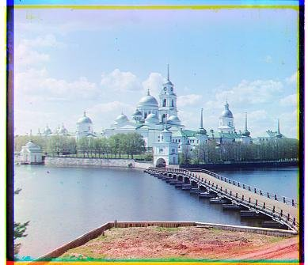
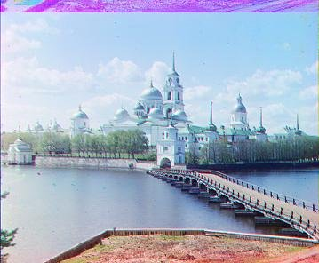
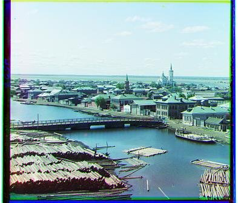
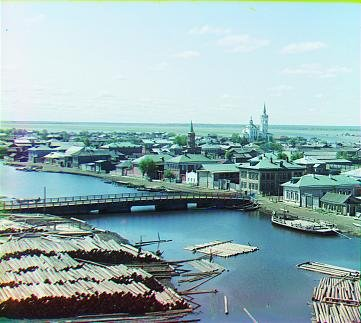
By the end this stopped mattering. Vectorizing the search forced a crop anyway,
and crop_frac now trims a fixed fraction off every side before
matching, so the full plates align just as well as the hand-cropped ones. I kept
both in the results.
Single-scale alignment
Splitting the plate and searching displacements
The plate height doesn't usually divide evenly by three, so I take
floor(h/3) and let the last rows drop off the bottom. Blue is the
reference because it's the first third. Green and red each get their own
independent search over vertical and horizontal displacement.
# compute the height of each part (just 1/3 of total)
height = np.floor(im.shape[0] / 3.0).astype(int)
# separate color channels
b = im[:height]
g = im[height: 2*height]
r = im[2*height: 3*height]
# align the images
g_offset = calculate_offset_pyramid(b, g, step_max_offset=max_offset_step, initial_search_frac=initial_search_frac, crop_frac=crop_frac)
r_offset = calculate_offset_pyramid(b, r, step_max_offset=max_offset_step, initial_search_frac=initial_search_frac, crop_frac=crop_frac)
rgb_aligned = align_and_crop(b, g, g_offset, r, r_offset)
Scoring with normalized cross-correlation
I skipped SSD entirely and went straight to NCC. The three exposures don't just sit in different places, they're different brightnesses, since each filter passed a different amount of light and the plates have aged since. Matching on raw intensity slides the image to wherever the brightness agrees, which isn't the same place as where the structure agrees. Normalizing each patch to zero mean and unit standard deviation before correlating throws the brightness out and leaves only the question I care about, which is whether the two patterns line up.
def normalize_matrix(mat: np.array) -> np.array:
std, mean = np.std(mat), np.mean(mat)
if std == 0:
return mat - mean
return (mat - mean)/std
def interior(img: np.array, frac: float = 0.1) -> np.array:
"""helper function to crop with"""
h, w = img.shape
return img[int(h*frac):int(h*(1-frac)), int(w*frac):int(w*(1-frac))]
Results on the small JPEGs
The small plates are about 390×1024, small enough to search exhaustively at full resolution without any of the machinery in the rest of this page, and the serial version handled all three without trouble. The images below aren't its output though. Every result on this page is from the final pipeline, except the emir filter comparison further down, which is labeled.
{kind=link}
{kind=link}
{kind=link}
Vectorizing the search
The first version is a double loop over every candidate (i, j),
slicing the overlapping region out of both channels, normalizing both, and taking
the mean of their product. It works, and it redoes nearly all of its work on every
iteration, since each offset renormalizes the whole overlap from scratch.
for i in range(-max_offset, max_offset):
for j in range(-max_offset, max_offset):
ref_top = max(0, i)
ref_bottom = min(rows, rows + i)
ref_left = max(0, j)
ref_right = min(cols, cols + j)
child_top = max(0, -i)
child_bottom = min(rows, rows - i)
child_left = max(0, -j)
child_right = min(cols, cols - j)
ref_patch = ref[ref_top:ref_bottom, ref_left:ref_right]
child_patch = child[child_top:child_bottom, child_left:child_right]
if ref_patch.shape[0] < (rows * 0.7) or ref_patch.shape[1] < (cols * 0.7):
continue
normalized_ref = normalize_matrix(ref_patch)
normalized_child = normalize_matrix(child_patch)
current_ncc = np.mean(normalized_ref * normalized_child)
if current_ncc>max_ncc:
max_ncc = current_ncc
offset = (i,j)
Then I vectorized it with sliding_window_view, which builds every
candidate window at once and computes the whole correlation surface in one go. This
is also where the automatic crop first showed up, not as a feature but because it
was the only way to vectorize: every window has to be the same shape for the
strided view to exist. So the template is the child channel shrunk by
max_offset on all four sides, and the reference supplies every
template_size window that fits. The template also only needs
normalizing once now instead of once per offset.
rows, cols = ref.shape
template_size = (rows-2*max_offset, cols-2*max_offset)
n = template_size[0]*template_size[1]
child_patch = child[max_offset:max_offset + template_size[0], max_offset:max_offset + template_size[1]]
child_patch_normed = normalize_matrix(child_patch)
ref_windows = sliding_window(ref, template_size)
Keeping memory in check
That version was supposed to avoid instantiating a copy of the sliding window, and then did it anyway when I computed the means and sigmas. Ordinary reductions materialize the view, and the view holds one full-size template for every candidate offset. On the small jpgs I didn't notice. On the tifs it wanted tebibytes and died on the spot.
So I did some research and found einsum, which turned out to be
exactly right for this. Both quantities I need are contractions over the strided
view, so einsum walks the strides directly and never instantiates
anything: one contraction gives the per-window sums of squares, the other gives the
correlation surface, and the variances fall out of the sums of squares and the
means by the usual identity. Memory use drops to something reasonable and the whole
search becomes two contractions.
means = np.sum(ref_windows, axis=(-2,-1))/n
sum_sq = np.einsum('ijhw,ijhw->ij', ref_windows, ref_windows)
variances = sum_sq / n - means**2
sigmas = np.sqrt(np.maximum(variances, 1e-12))
ncc_map = np.einsum('ijhw,hw->ij', ref_windows, child_patch_normed) / (n * sigmas)
max_y, max_x = np.unravel_index(np.argmax(ncc_map), ncc_map.shape)
offset = (max_y-max_offset, max_x-max_offset)
The other memory thing was how a known offset from the previous pyramid level gets applied. Rolling the reference array copies it, and it also wraps content around from the opposite edge, which is real content showing up in the wrong place. Pre-slicing the reference to the shifted overlap instead is a view, costs nothing, and doesn't wrap.
Multiscale pyramid
With einsum in place the big tifs aligned decently, but the
runtimes were really long. The plates are roughly 3700×9650 and the real
displacement between channels can be well over a hundred pixels, so a single-scale
search needs a window big enough to contain that, evaluated against images that
size. Almost all of that surface is nowhere near the answer. So, pyramid: find the
displacement on a small version where a wide window is cheap, then walk down
refining it.
Building the pyramid
The blur and the pyramid are both handrolled. The blur is the 5×5 binomial
kernel, the outer product of [1, 4, 6, 4, 1] with itself over 256.
Edges are mirror-padded by two pixels so the blur doesn't darken the border, and
the convolution is sliding_window_view plus einsum again.
A pyramid level is a blur followed by [::2, ::2].
def gaussian_blur_5(image:np.array) -> np.array:
binom_vec_5 = np.array([1, 4, 6, 4, 1])
gaussian_kernel_5 = 1/256*np.outer(binom_vec_5,binom_vec_5)
padded = mirror_pad_2(image)
windows = sliding_window(padded, (5,5))
return np.einsum('ijhw,hw->ij', windows, gaussian_kernel_5)
def downsample_half(image: np.array):
return gaussian_blur_5(image)[::2, ::2]
auto_pyramid picks the depth from the image instead of taking it as
an argument, choosing the smallest depth whose coarsest level fits under a target
on its largest axis. I started with a ~500px target and later raised it to 800. For
the full-resolution plates that comes out to five levels.
def auto_pyramid(image: np.array, target_max_dim: int=800, filter=None)->list:
"""Returns a pyramid with coarsest image less target_max_dim"""
depth = int(np.ceil(np.log2(max(image.shape)/target_max_dim)))
return image_pyramid(image, max(depth, 0) + 1, filter)
Coarse-to-fine refinement
At the coarsest level I search wide, since that level is small enough that a wide window is nearly free and the whole point is to catch the full displacement. Each step down, the estimate doubles along with the resolution and then gets refined with a much smaller search around that prediction. I settled on ±10 pixels for the refinement passes. Below that, errors at one level can't be recovered at the next, and church in particular was coming out more than six pixels off while everything else was perfect, which is what a too-tight refinement window looks like.
With the pyramid working and the parameters roughly tuned, images were taking about 5–10 seconds each.
ref = interior(ref.astype(np.float32, copy=False), crop_frac)
child = interior(child.astype(np.float32, copy=False), crop_frac)
filter = lambda x: pyramid.band_pass(x)
child_pyramid = pyramid.auto_pyramid(child, filter=filter)
pdepth = len(child_pyramid)
ref_pyramid= pyramid.image_pyramid(ref, pdepth, filter=filter)
m = int(initial_search_frac * min(ref_pyramid[0].shape)) # relative to coarsest level; frac < 0.5
offset = vectorized_calculate_offset_ncc(ref_pyramid[0], child_pyramid[0], max_offset=m)
for i in range(1, pdepth):
offset = (offset[0]*2, offset[1]*2)
offset = vectorized_calculate_offset_ncc(ref_pyramid[i], child_pyramid[i], max_offset=step_max_offset, known_offset=offset)
return offset
Results
Final settings: initial_search_frac=0.4,
max_offset_step=10, crop_frac=0.4, band-pass filtering at
every pyramid level. On a 7950X / RTX 4090 / Ubuntu 26.04 box, CPU only since the
GPU version didn't pan out, a full-resolution tif takes just under 20 seconds and
the small jpgs are near instant.
Provided images
{kind=link}
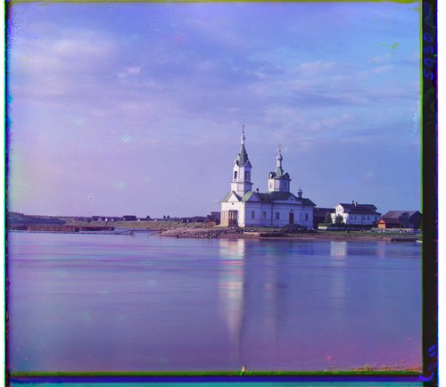
{kind=link}
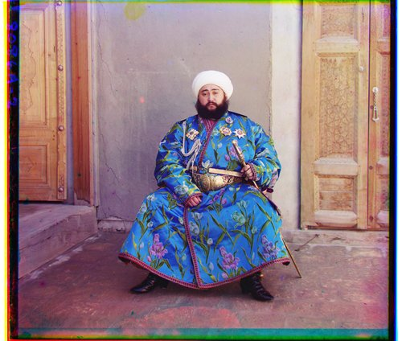
{kind=link}
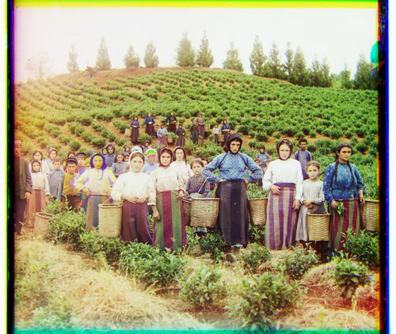
{kind=link}
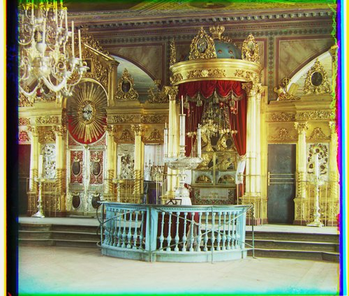
{kind=link}
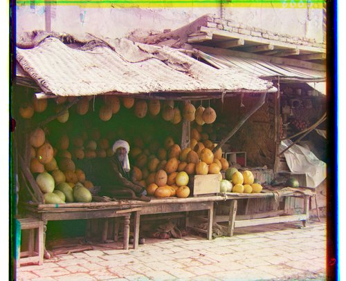
{kind=link}
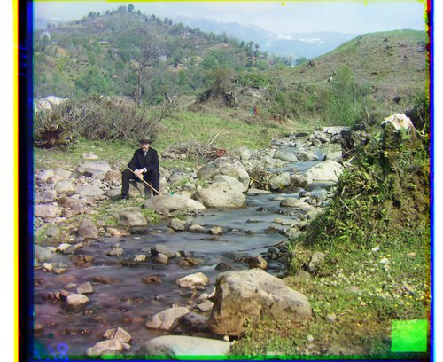
{kind=link}
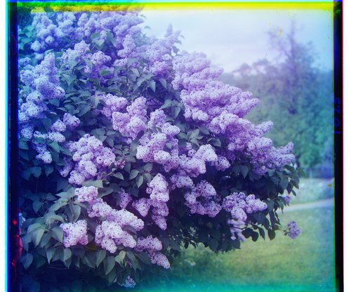
{kind=link}
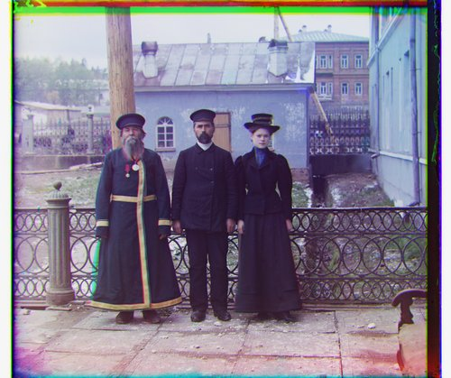
{kind=link}
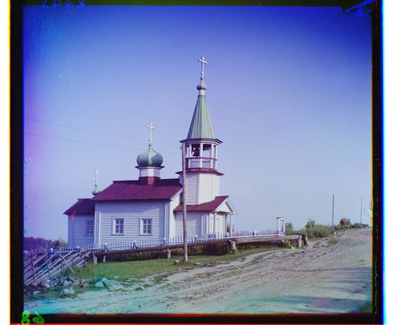
{kind=link}
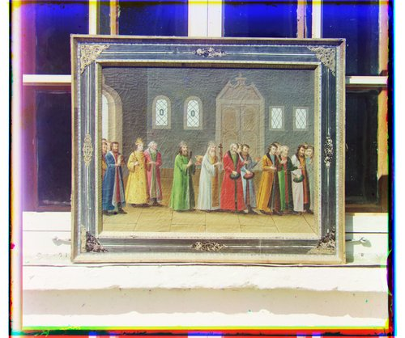
{kind=link}
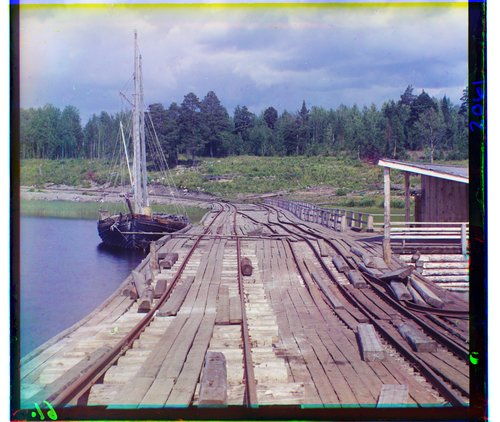
Images I picked myself
These three are ones I went and found in the Library of Congress collection myself, run through the same pipeline with the same settings as everything above.
{kind=link}
{kind=link}
{kind=link}
Getting there: what I tried
Everything below is a full run over all seventeen inputs with one thing changed, each kept in its own output directory so I could compare them. I decided early that the pipeline should have exactly one real hyperparameter, the crop fraction, and stuck to it. Anything that only worked because I'd tuned a per-image constant didn't count as working.
Crop fraction: 0.3 → 0.35 → 0.4
interior() trims crop_frac off each side before
matching, so 0.3 keeps the middle 40%×40% of the plate and 0.4 keeps the
middle 20%×20%. Cropping harder removes more border and more of whatever else
is confusing the match, at the cost of less signal left to correlate. Church is the
image that wanted aggressive cropping and it's what drove the increases. Raising
the coarsest-level target to 800px and the refinement window to ±10 both
helped it, but going from 0.3 to 0.4 is what actually fixed it.
From raw pixels to filtered features
Raw intensity is what breaks emir. Its channels have different gamma, so the robe is bright in one exposure and dark in another, and the correlation ends up chasing a brightness relationship that doesn't hold across the image. NCC's global normalization doesn't save it, because the difference isn't a single global offset and scale.
A high pass, image - blur(image), fixes emir on its own. I went
with a band pass instead because it fixes emir and helps elsewhere too. It's a
difference of Gaussians built out of repeated applications of the same 5-tap blur,
two passes minus five passes, so an effective σ of about √2 against
about √5. That drops the slow brightness variation the way the high pass
does, and also drops the finest scale, meaning scan grain and the water ripple
texture in church that I suspected was part of its problem.
def high_pass(image: np.array):
return image - gaussian_blur_5((image))
def band_pass(image, low=2, high=5):
a = image
for i in range(low): a = gaussian_blur_5(a)
b = a
for i in range(high-low): b= gaussian_blur_5(b)
return a-b
Both of those are emir re-run at the final settings with only the filter changed, so the comparison isn't contaminated by a different crop fraction. High pass isn't shown because it finds the same offsets as the band pass here and the output is byte-identical, which is the clearest way to say that the high pass already solves emir on its own.
The surprise was melons. Aligning on band-passed images fixed a failure that had nothing to do with emir's gamma problem. At higher crop fractions melons was landing badly, and I suspect it's because the small central region left after cropping is mostly smooth fruit whose pixel values are too similar to each other for intensity matching to find anything to grip on. The band pass turns that region into edges, so there's structure to align even in the middle of the image. Cropping harder and filtering for edges ended up working together rather than against each other.
I had meant to do something explicitly in the frequency domain as well, but reading further convinced me a Fourier approach would mostly be doing the same job the band pass already does here, so I left it.
Fixed search window → normalized search fraction
The coarsest-level search budget started as a fixed pixel count, 200 and then
250. That's hard to reason about, because the coarsest pyramid level is a different
size for every plate, so the same 250 pixels means something different each time.
initial_search_frac makes it a fraction of the smaller dimension of the
coarsest level instead, so the budget means the same thing everywhere. The actual
value, like the rest of the constants here, came from running the batch and seeing
what worked.
The CUDA detour
At this point I had decent alignment on the bigger tifs but really long
runtimes, so I took a detour and tried CUDA, swapping the appropriate
np operations for cp. The problem was that sliding window
with CuPy instantiates a copy, which is exactly the allocation the whole
einsum approach exists to avoid, and there was nowhere near enough
memory for it even with 24GB of VRAM. I could have blocked it into separate crops,
but I shelved it instead and moved on to the pyramid. In hindsight the blocked
version might have helped church, for reasons that come up below.
Bells & whistles
Better features: band-pass filtering
Alignment runs on band-pass filtered images rather than raw pixels, at every pyramid level. As above, this is what makes emir work at all, and it's also what rescued melons at the crop fractions the rest of the set wanted.
Automatic overlap cropping
Shifting two channels to align them leaves bands along the edges where only some
of the channels have data, which come out as saturated single-color strips.
align_and_crop intersects the three shifted rectangles and keeps only
the region all three cover, so those bands never reach the output. It's worth being
clear about what this doesn't do: it removes artifacts created by the alignment,
not the original black and white scan borders, which are part of the plate and
survive into the final images.
def align_and_crop(b: np.array, g: np.array, g_offset: tuple, r: np.array, r_offset: tuple) -> tuple:
rows, cols = b.shape
(gi, gj), (ri, rj) = g_offset, r_offset
top, bottom, left, right = max(g_offset[0], r_offset[0], 0), min(rows+g_offset[0], rows+r_offset[0], rows), max(g_offset[1], r_offset[1], 0), min(cols+g_offset[1], cols+r_offset[1], cols)
acb = b[top:bottom, left:right]
acg = g[top-gi:bottom-gi, left-gj:right-gj]
acr = r[top-ri:bottom-ri, left-rj:right-rj]
return (acr, acg, acb)
Handrolled blur and pyramid
The blur, the pyramid, the decimation and both filters are all implemented
directly rather than pulled from skimage or scipy.ndimage.
The convolution uses the same sliding_window_view and
einsum pattern as the matching code, so the whole project is
essentially one idea applied twice.
Failure cases and remaining issues
Emir is the intended hard case and it's fine now, since the band pass handles the gamma mismatch between its channels.
Church is the one that still leaves a bit to be desired. It aligns correctly, but only because the crop fraction is set aggressively enough to cut away most of the plate, and that setting is global. The features I think are causing the trouble are the water ripples and the open sky, both big regions of repetitive or near-featureless texture that a correlation is happy to match at the wrong offset, plus some actual misalignment in the outer buildings, though I believe this is due to movement. Cropping to the center avoids them, which fixes it here and in this dataset, but I'd have preferred to find something that let me crop less since images with defining features on the edges might be affected. Sticking to one global hyperparameter means church sets the crop fraction for everything else.
The scan borders also survive in every output, since nothing in the pipeline detects or removes them.